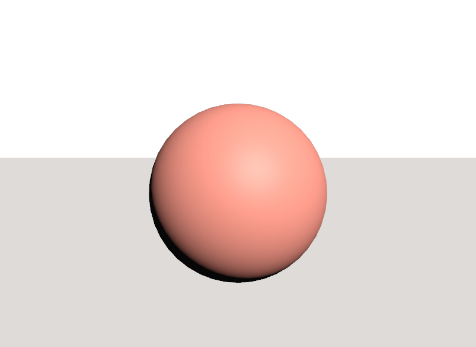
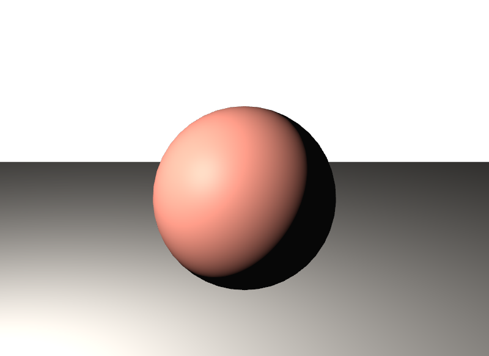
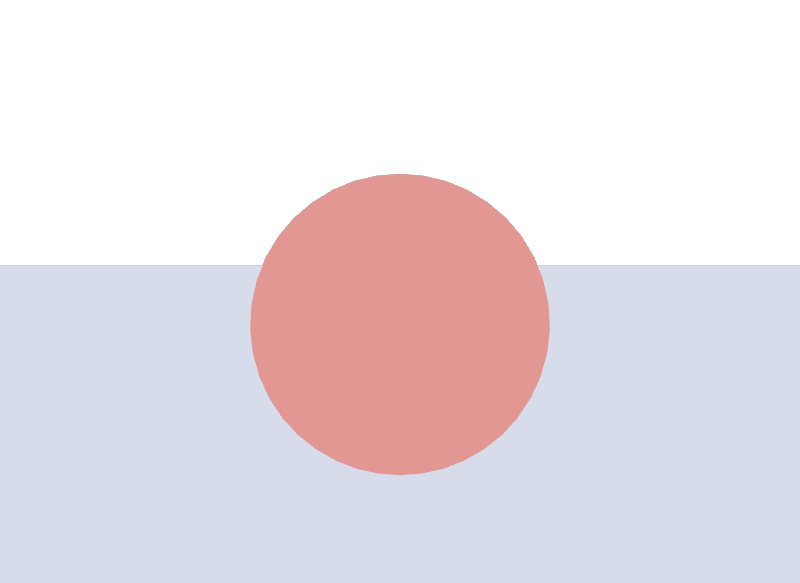

Light型ごとのintensityの桁を取り違える
DistantLightは既定が50000、SphereLightやRectLightは1です。DistantLightに1と書いてもほぼ真っ暗ですし、SphereLightに20000と書けば完全に白飛びします。まず既定値の桁を確認します。
STEP 34 · LIGHTS
光もPrimです。型が形を、LightAPIが明るさを決めます
今日これだけ
公式情報に基づく説明
OpenUSDでは、光もシーンの中のPrimとして記述します。担当するSchemaの集まりがUsdLuxです。def DistantLight "Sun"のように書けば、それはStageの階層に並ぶ一つのPrimであり、STEP 15で見たXformの階層にそのまま従います。親を動かせば光も動きます。
UsdLuxの構成は2階建てです。Light型（DistantLight、SphereLightなど）が「どういう形の光源か」を決め、LightAPIというApplied API Schemaが「どのくらいの明るさで、何色か」という共通の設定を与えます。
この2つは、STEP 13で見たTyped SchemaとAPI Schemaの関係そのものです。Light型はConcrete Typed Schema、LightAPIはSingle-Apply API Schemaで、Light型を定義するとLightAPIが自動的に適用されます。
Python
from pxr import Usd, UsdLux
stage = Usd.Stage.CreateNew("l.usda")
light = UsdLux.DistantLight.Define(stage, "/Sun")
print("型名 :", light.GetPrim().GetTypeName())
print("apiSchemas :", light.GetPrim().GetAppliedSchemas())
print("HasAPI(LightAPI):", light.GetPrim().HasAPI(UsdLux.LightAPI))
print("DistantLight:", Usd.SchemaRegistry.GetSchemaKind("DistantLight"))
print("LightAPI :", Usd.SchemaRegistry.GetSchemaKind("LightAPI"))型名 : DistantLight
apiSchemas : ['LightAPI', 'CollectionAPI:lightLink', 'CollectionAPI:shadowLink']
HasAPI(LightAPI): True
DistantLight: SchemaKind.ConcreteTyped
LightAPI : SchemaKind.SingleApplyAPIDistantLightを定義しただけで、apiSchemasに3つ積まれています。LightAPIのほかにCollectionAPI:lightLinkとCollectionAPI:shadowLinkがあります。これはSTEP 13で見たMultiple-Apply API Schemaの実例で、「この光をどのPrimに当てるか」「どのPrimに影を落とさせるか」をCollectionで指定するためのものです。
LightAPIの共通Attribute
LightAPIが与えるAttributeは、名前がすべてinputs:で始まります。STEP 32のShaderのInputと同じ書き方です。主なものは次のとおりです。既定値は実行環境（usd-core 0.26.8）で読み出したものです。
| Attribute | 型 | 既定値 | 意味 |
|---|---|---|---|
inputs:intensity | float | 型による | 明るさ。値の意味は型ごとに違う |
inputs:color | color3f | (1, 1, 1) | 光の色 |
inputs:exposure | float | 0.0 | 2のべき乗で明るさを足す。1増えると倍 |
inputs:diffuse | float | 1.0 | 拡散反射への寄与の倍率 |
inputs:specular | float | 1.0 | 鏡面反射への寄与の倍率 |
inputs:normalize | bool | false | 光源の大きさで明るさを割り、大きさを変えても明るさを保つ |
inputs:enableColorTemperature | bool | false | 色温度による色付けを使うか |
inputs:colorTemperature | float | 6500.0 | 色温度（ケルビン）。上のbooleanがtrueのときだけ効く |
Light型
angleで輪郭のぼけ具合texture:fileで環境画像radiusで大きさwidth・height。texture:fileも持てるradiuslength・radiusこの6つのほかに、既存の形を光らせるMeshLightAPI・VolumeLightAPI、明かりの通り道を作るPortalLight、光を加工するLightFilterがあります。まずは上の6つを押さえれば十分です。
USDA
# 平行光。位置ではなく「向き」だけが効く
def DistantLight "KeyLight"
{
float inputs:intensity = 20000
float inputs:angle = 1
color3f inputs:color = (1, 0.96, 0.9)
float3 xformOp:rotateXYZ = (-40, 25, 0)
uniform token[] xformOpOrder = ["xformOp:rotateXYZ"]
}xformOp:translateを書いていません。DistantLightは無限に遠くから来る平行光なので、どこに置いても結果が変わらないためです。効くのはxformOp:rotateXYZだけです。太陽の光だと考えると分かりやすくなります。

examples/lesson-37/distant-light.usda / ソースからビルドしたOpenUSD v26.08のusdrecord --disableCameraLight（Hydra Storm・Metal）/ macOS 26.5.2・Apple M4USDA
# 点光源。DistantLight と違い「位置」が効き、離れるほど暗くなる
def SphereLight "KeyLight"
{
float inputs:intensity = 50
float inputs:radius = 0.4
color3f inputs:color = (1, 0.95, 0.85)
bool inputs:normalize = true
double3 xformOp:translate = (-2.2, 3, 2.2)
uniform token[] xformOpOrder = ["xformOp:translate"]
}
examples/lesson-37/sphere-light.usda / ソースからビルドしたOpenUSD v26.08のusdrecord --disableCameraLight（Hydra Storm・Metal）/ macOS 26.5.2・Apple M4inputs:intensityが50であることに注目してください。前のDistantLightでは20000でした。同じintensityという名前でも、型が違えば必要な値の桁が違います。実際、Schemaの既定値もDistantLightだけ50000で、SphereLightやRectLightは1です。
USDA
# 全方位から包む光。位置も向きも効かない
def DomeLight "SkyLight"
{
float inputs:intensity = 1
color3f inputs:color = (0.85, 0.9, 1)
}
examples/lesson-37/dome-light.usda / ソースからビルドしたOpenUSD v26.08のusdrecord --disableCameraLight（Hydra Storm・Metal）/ macOS 26.5.2・Apple M4この結果は不具合ではありません。DomeLightはinputs:texture:fileに環境画像を指定して使うのが本来の形で、画像の方向ごとの明暗が陰影を作ります。画像を指定しない場合は一様な色になるため、上のように立体感が消えます。実際、環境画像なしで描画するとDome light has no texture asset path.という警告が出ます。
Python
from pxr import Gf, Usd, UsdGeom, UsdLux
stage = Usd.Stage.CreateNew("distant-light.usda")
UsdGeom.Xform.Define(stage, "/World")
light = UsdLux.DistantLight.Define(stage, "/World/KeyLight")
light.CreateIntensityAttr(20000)
light.CreateAngleAttr(1)
light.CreateColorAttr(Gf.Vec3f(1, 0.96, 0.9))
# 向きだけを与える。DistantLight に translate は要らない
UsdGeom.Xformable(light).AddRotateXYZOp().Set(Gf.Vec3f(-40, 25, 0))
stage.Save()CreateIntensityAttrやCreateColorAttrはLightAPIが持つメソッドで、Light型のクラスからそのまま呼べます。CreateAngleAttrはDistantLightにしかありません。共通と型固有の区別が、APIの側にもそのまま現れています。
USDA → Python mapping
USDA
def DistantLight "KeyLight"↓Python
UsdLux.DistantLight.Define(stage, "/World/KeyLight")USDA
float inputs:intensity = 20000↓Python
light.CreateIntensityAttr(20000)USDA
color3f inputs:color = (1, 0.96, 0.9)↓Python
light.CreateColorAttr(Gf.Vec3f(1, 0.96, 0.9))USDA
float3 xformOp:rotateXYZ = (-40, 25, 0)↓Python
UsdGeom.Xformable(light).AddRotateXYZOp().Set(...)Beginner notes
よくある間違い
DistantLightは既定が50000、SphereLightやRectLightは1です。DistantLightに1と書いてもほぼ真っ暗ですし、SphereLightに20000と書けば完全に白飛びします。まず既定値の桁を確認します。
xformOp:translateを書いても結果は変わりません。無限遠からの平行光なので、効くのは向きだけです。動かしたつもりで何も起きないので、原因が分かりにくい間違いです。
inputs:enableColorTemperature = trueを書かないと、colorTemperatureの値は使われません。
環境画像を指定しないDomeLightは全方位から一様に照らすため、陰影が消えます。形を見せたいときは、方向を持つLightを併用します。
既定のライトはファイルに書かれていないため、他のツールで開くと消えます。自分のシーンにLightを書いたつもりで、実は既定ライトを見ていた、という取り違えが起こります。
Glossary
radiusで大きさを決める。widthとheightで大きさを決め、texture:fileも持てる。radiusで大きさを決める。lengthとradiusで大きさを決める。texture:fileに環境画像を指定して使う。enableColorTemperatureをtrueにしないと効かない。CollectionAPI:lightLinkとして自動的に適用される。Official references
確認日: